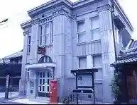
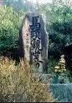
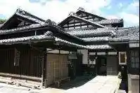
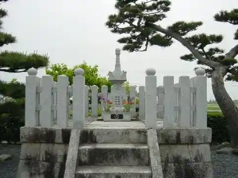

Sei I Yado Museum
Maibara, Shiga · 0749-54-2163 · Official / source link

Mezu Kanzeon
Maibara, Shiga · Official / source link

Kashiwabara Yado Rekishikan
Maibara, Shiga · 0749-57-8020 · Official / source link

Kamanoha Castle Ruins
Maibara, Shiga · 0749-53-5154 · Official / source link
Yamauchi Kazutoyo Ko Haha no Haka
Maibara, Shiga · Official / source link

Ibukiyama Bunka Museum
Maibara, Shiga · 0749-58-0252 · Official / source link
Toyotarentariisu Shiga Maibara Ekimae Mise
Maibara, Shiga · 0749-52-1000 · Official / source link
Ingurisshu Garden Rozamberii Tawada
Maibara, Shiga · 0749-54-2323 · Official / source link
Asazuma Minato Ato
Maibara, Shiga · Official / source link
Nakasendo Sei I Yado
Maibara, Shiga · 0749-53-5140 · Official / source link
Masahiro Tera
Maibara, Shiga · 0749-52-4145 · Official / source link
BIG·BREATH
Maibara, Shiga · Official / source link
Kazutoyo Chiyo no Zo
Maibara, Shiga · 0749-53-5140 · Official / source link
Nagao Tera
Maibara, Shiga · 0749-58-1141 · Official / source link
Maibara Omi Haniwa Kan
Maibara, Shiga · 0749-52-5246 · Official / source link
Okuibuki Minshuku
Maibara, Shiga · 0749-59-0322 · Official / source link
Roadside Station Ibuki Village (Jun Sai Forest)
Maibara, Shiga · 0749-58-0390 · Official / source link
Matsuo Tera (Tendai Shu)
Maibara, Shiga · 0749-54-0120 · Official / source link
Meisui Kyo Sei no Shimizu
Maibara, Shiga · Official / source link
Sakata Jinmei Miya
Maibara, Shiga · 0749-52-1894 · Official / source link
Goshiki Falls
Maibara, Shiga · Official / source link
Matsuo Tera Mandokoro
Maibara, Shiga · 0749-54-0120 · Official / source link
Toku Gen In (Kiyotaki Tera) Kyogoku Ie Hakasho
Maibara, Shiga · 0749-57-0047 · Official / source link
Kitabatake Gu Gyo Kyo Haka
Maibara, Shiga · 0749-53-5154 · Official / source link
Penshon Ibuki
Maibara, Shiga · Official / source link
Maibara Ibuki Yakuso no Ribun Ka Center
Maibara, Shiga · 0749-58-0105 · Official / source link
Wa cafe Tachi Ki
Maibara, Shiga · 0749-56-0664 · Official / source link
Ibuki no Ibuki Soba
Maibara, Shiga · 0749-58-1712 · Official / source link
Ibukiyama Fumoto no Soba Hatake
Maibara, Shiga · Official / source link
JR Seigai Eki
Maibara, Shiga · 050-3772-3910 · Official / source link
Nakasendo Bamba Yado
Maibara, Shiga · 0749-54-0980 · Official / source link
Agurikoteji
Maibara, Shiga · 0749-59-0322 · Official / source link
Ebisu Shrine
Maibara, Shiga · Official / source link
Ibukiyama
Maibara, Shiga · Official / source link
JR Eki Rentaka Maibara Eigyosho
Maibara, Shiga · Official / source link
Roadside Station Omi Haha no Sato (Maibara Omi Haha no Sato Bunka Center)
Maibara, Shiga · 0749-53-3715 · Official / source link
Eboshi Iwa
Maibara, Shiga · Official / source link
Mishima Ike
Maibara, Shiga · 0749-53-5140 · Official / source link
Rutchi Plaza
Maibara, Shiga · 0749-55-4550 · Official / source link
Goichi Farm
Maibara, Shiga · 0749-52-6288 · Official / source link
Hinade Shrine
Maibara, Shiga · Official / source link
Shiga Prefectural Bunka Sangyo Koryu Hall
Maibara, Shiga · 0749-52-5111 · Official / source link
Shinkansen Kosokushikensharyo Hozon Ba
Maibara, Shiga · Official / source link
Ao Kishi Tera
Maibara, Shiga · 0749-52-0463 · Official / source link
Shigaken Sei I Yoson Ba
Maibara, Shiga · 0749-54-2715 · Official / source link
Kitaguni Kaido Maibara Yado
Maibara, Shiga · 0749-53-5140 · Official / source link
Meisui — Tenjin Mizu
Maibara, Shiga · Official / source link
Anegawa Park
Maibara, Shiga · 0749-58-1137 · Official / source link
Wakamiya Shi Yakatato
Maibara, Shiga · Official / source link
Anegawa Joryu
Maibara, Shiga · 0749-59-0027 · Official / source link
Sei I Public Hall
Maibara, Shiga · Official / source link
Ibukiyama Doraibuei
Maibara, Shiga · 0584-43-1155 · Official / source link
Chikuma Shrine
Maibara, Shiga · Official / source link
Guransu no Okuibuki (Okuibuki Ski Area)
Maibara, Shiga · 0749-55-0123 · Official / source link
TOYOTA SHARE Maibara Eki Higashiguchi Mae
Maibara, Shiga · 0800-666-2077 · Official / source link
Sei I Gorge
Maibara, Shiga · Official / source link
Nemonogatari Village
Maibara, Shiga · Official / source link
Saien Tera
Maibara, Shiga · 0749-52-2168 · Official / source link
Sei I Jizo Mikoto Jizo Do
Maibara, Shiga · Official / source link
Meisui — Juo Mizu
Maibara, Shiga · Official / source link
Meisui — Saigyo Mizu Awa Ko Tsuka
Maibara, Shiga · Official / source link
Yamatsuteru Shrine
Maibara, Shiga · 0749-54-2913 · Official / source link
Kabuto Tsuhara Koryu Center
Maibara, Shiga · Official / source link
Nakasendo Kashiwabara Yado
Maibara, Shiga · 0749-53-5140 · Official / source link
Ibuki Hamu
Maibara, Shiga · 0120-58-1120 · Official / source link
Jizo Kawa no Baika Mo
Maibara, Shiga · Official / source link
Miruku Farm Ibuki
Maibara, Shiga · 0749-58-0049 · Official / source link
Biitoru Land Maibara
Maibara, Shiga · 0749-55-3751 · Official / source link
Sei Bodai In (En Jo Tera)
Maibara, Shiga · 0749-57-1109 · Official / source link
Shitchi In
Maibara, Shiga · 0749-58-0531 · Official / source link
Renge Tera
Maibara, Shiga · 0749-54-0980 · Official / source link
Meisui — Ibotori Mizu
Maibara, Shiga · Official / source link
Green Park Santo
Maibara, Shiga · 0749-55-3751 · Official / source link
Isozaki Shrine
Maibara, Shiga · Official / source link
Okuibuki Furusato Densho Kan
Maibara, Shiga · Official / source link
Ibukiyama Paraguraidasukuru
Maibara, Shiga · 090-7762-9933 · Official / source link
Ohara Kan'onji (I Fuki Yama Kannon Gokokuji)
Maibara, Shiga · 0749-55-1340 · Official / source link
JR Maibara Eki
Maibara, Shiga · 0570-00-2486 · Official / source link
O Bento no Izutsuya
Maibara, Shiga · 0749-52-0006 · Official / source link
Okinaga Ryo
Maibara, Shiga · 0749-53-5140 · Official / source link
Sei I Kibori Art Museum
Maibara, Shiga · 0749-54-0842 · Official / source link
Kyogoku Shi Iseki − Kyogoku Shi Jokan Ato Yataka Jiseki −
Maibara, Shiga · 0749-58-0252 · Official / source link
Yutani Shrine
Maibara, Shiga · Official / source link
Meisui — Izumi Jinja Yusui
Maibara, Shiga · Official / source link
TOYOTA SHARE Ekushibu Biwako
Maibara, Shiga · 0800-666-2077 · Official / source link
Ohira Kannon
Maibara, Shiga · 0749-53-5154 · Official / source link
Maibara Yakusho
Maibara, Shiga · 0749-53-5100 · Official / source link